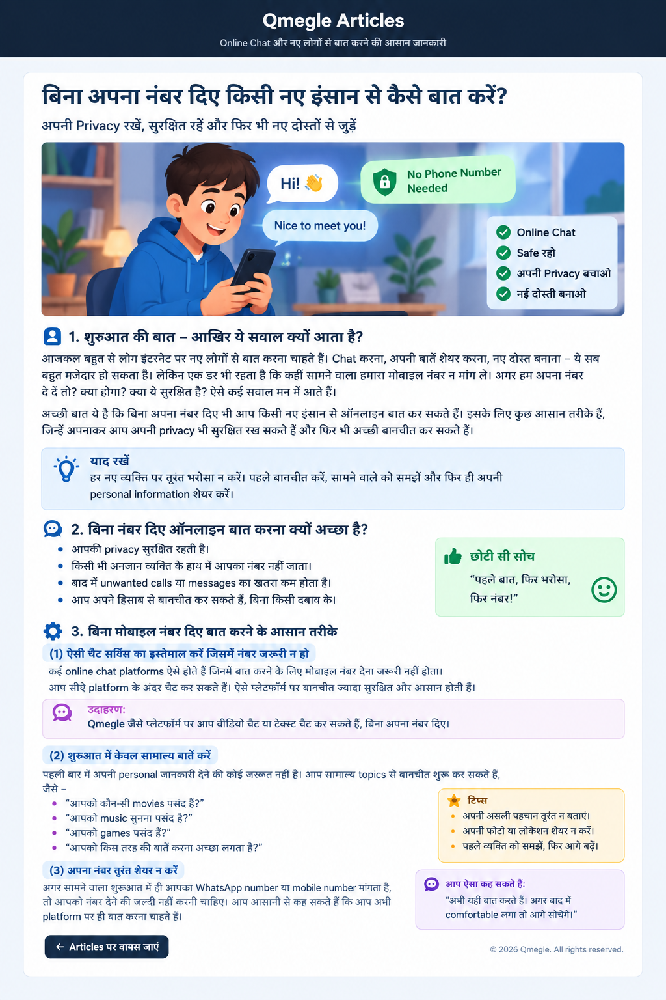

बिना नंबर दिए ऑनलाइन बात कैसे करें?
क्या आप किसी नए इंसान से ऑनलाइन बात करना चाहते हैं, लेकिन अपना मोबाइल नंबर देने में comfortable नहीं हैं? अच्छी बात यह है कि हर बातचीत के लिए फोन नंबर देना जरूरी नहीं होता।

आज इंटरनेट पर नए लोगों से बात करना बहुत आसान हो गया है। कोई music के बारे में बात करना चाहता है, कोई games के बारे में, कोई अपनी पसंद की movies के बारे में और कोई बस थोड़ी देर किसी नए इंसान से बात करना चाहता है।
लेकिन पहली बार किसी अनजान व्यक्ति से बात करते समय एक सवाल मन में जरूर आता है: क्या बिना अपना मोबाइल नंबर दिए किसी नए इंसान से ऑनलाइन बात कर सकते हैं?
हाँ, कर सकते हैं। आपको किसी नए व्यक्ति से बात करने के लिए शुरुआत में अपना phone number, घर का पता या दूसरी personal information देना जरूरी नहीं है।
बिना नंबर दिए ऑनलाइन बात करना क्यों अच्छा हो सकता है?
जब हम किसी नए इंसान से पहली बार मिलते हैं, तो हमें उसके बारे में ज्यादा जानकारी नहीं होती। ऑनलाइन दुनिया में तो सामने वाला व्यक्ति हजारों किलोमीटर दूर भी हो सकता है। इसलिए शुरुआत में अपनी private information को अपने पास रखना समझदारी है।
अगर आपने किसी अनजान व्यक्ति को अपना मोबाइल नंबर दे दिया, तो वह बाद में आपको call या message कर सकता है। कुछ लोग बार-बार परेशान भी कर सकते हैं।
इसका मतलब यह नहीं है कि हर अनजान व्यक्ति खराब होता है। बस शुरुआत में थोड़ी सावधानी रखना अच्छी आदत है।
बिना मोबाइल नंबर के चैट कैसे करें?
अगर आप सोच रहे हैं कि बिना मोबाइल नंबर के चैट कैसे करें, तो सबसे आसान तरीका है ऐसी online chat service का उपयोग करना जहाँ बातचीत करने के लिए अपना phone number देना जरूरी न हो।
ऐसे platform पर आप platform के अंदर ही chat कर सकते हैं। इससे आपको शुरुआत में अपना personal contact number बताने की जरूरत नहीं पड़ती।
Qmegle पर बातचीत की शुरुआत कैसे करें?
Qmegle जैसे random chat platform का उद्देश्य नए लोगों से बातचीत शुरू करने का आसान तरीका देना है। आप बातचीत की शुरुआत सामान्य सवाल से कर सकते हैं।
उदाहरण के लिए आप पूछ सकते हैं:
- Hi! आपका दिन कैसा जा रहा है?
- आपको music पसंद है?
- आपको कौन-सी movie अच्छी लगती है?
- आप games खेलते हैं?
- आपको free time में क्या करना पसंद है?
ध्यान रखें कि किसी भी online platform का उपयोग करते समय उसकी rules और safety features को समझना अच्छा रहता है।
पहली बातचीत में अपना नंबर क्यों नहीं देना चाहिए?
पहली बातचीत में सामने वाले व्यक्ति को आप ठीक से जानते नहीं हैं। इसलिए तुरंत WhatsApp number या mobile number देना जरूरी नहीं है।
हो सकता है सामने वाला बहुत अच्छा इंसान हो। लेकिन आपको यह बात पहली पांच मिनट की बातचीत में पता नहीं चल सकती।
इसलिए थोड़ा समय लेकर सामने वाले के व्यवहार को समझना बेहतर है।
पहले बात → फिर समझ → फिर भरोसा → उसके बाद फैसला।
अगर सामने वाला शुरुआत में ही आपका नंबर मांग ले तो?
मान लीजिए आपने किसी नए व्यक्ति से बात शुरू की। दो मिनट बाद वह पूछता है: "अपना WhatsApp number दो।"
आपको घबराने की जरूरत नहीं है और न ही मजबूरी में नंबर देने की जरूरत है। आप बहुत आराम से कह सकते हैं कि अभी यहीं बात करना चाहते हैं।
"अभी यहीं बात करते हैं। थोड़ा और जान-पहचान हो जाए, फिर देखते हैं।"
अगर सामने वाला आपकी बात समझ जाता है तो अच्छी बात है। लेकिन अगर वह बार-बार दबाव डालता है, तो बातचीत बंद करना भी बिल्कुल ठीक है।
Online Chat में कौन-सी personal information नहीं देनी चाहिए?
जब आप किसी नए इंसान से ऑनलाइन बात कर रहे हों, तो कुछ चीजें private रखना बहुत जरूरी है।
- मोबाइल नंबर
- OTP
- पासवर्ड
- Bank account की sensitive जानकारी
- ATM या card details
- घर का पूरा पता
- Personal documents
- बहुत ज्यादा निजी जानकारी
क्या अपना पूरा नाम बताना जरूरी है?
नहीं। पहली बातचीत में अपना पूरा नाम बताना जरूरी नहीं है। आप अपनी जरूरत और comfort के अनुसार बातचीत कर सकते हैं।
उदाहरण के लिए अगर कोई पूछता है, "आपका पूरा नाम क्या है?" तो आप चाहें तो सिर्फ अपना first name बता सकते हैं या topic बदल सकते हैं।
अपनी पहचान छिपाने और झूठ बोलने में फर्क होता है। Privacy रखने का मतलब यह नहीं कि आपको किसी को धोखा देना है। इसका मतलब सिर्फ इतना है कि आप अपनी जरूरी जानकारी सोच-समझकर शेयर करें।
क्या फोटो शेयर करना सुरक्षित है?
किसी नए online व्यक्ति को अपनी photo भेजने से पहले भी सोचें। खासकर ऐसी photo न भेजें जिसमें आपका घर, school, workplace, vehicle number या कोई दूसरी पहचान वाली जानकारी साफ दिखाई दे।
अगर कोई व्यक्ति photo भेजने के लिए आपको बार-बार मजबूर करता है, तो आप मना कर सकते हैं।
अगर कोई कहे "नंबर नहीं दोगे तो दोस्ती नहीं होगी"?
यह बात सुनकर आपको तुरंत नंबर देने की जरूरत नहीं है। अच्छी दोस्ती जबरदस्ती से नहीं बनती।
अगर सामने वाला आपकी "ना" को समझता है, आपकी privacy का सम्मान करता है और आपको किसी काम के लिए दबाव नहीं देता, तो बातचीत ज्यादा comfortable हो सकती है।
बिना नंबर दिए नए दोस्त से क्या बात करें?
अब सवाल आता है कि अगर नंबर नहीं देना है तो बातचीत आगे कैसे बढ़ाएं? इसका आसान जवाब है — common interests पर बात करें।
1. Music
पूछें कि सामने वाले को किस तरह का music पसंद है। इससे आगे कई topics निकल सकते हैं।
2. Movies और Web Series
"आपकी favorite movie कौन-सी है?" यह एक आसान conversation starter है।
3. Games
अगर दोनों को gaming पसंद है तो game के बारे में बात की जा सकती है।
4. Hobbies
सामने वाला खाली समय में क्या करता है? यह सवाल बातचीत को आगे ले जा सकता है।
5. सामान्य रोजमर्रा की बातें
खाना, मौसम, पढ़ाई, काम, movies, sports और hobbies जैसे सामान्य topics शुरुआत के लिए अच्छे हो सकते हैं।
एक छोटी सी मजेदार बातचीत का उदाहरण
सामने वाला: Hi
आप: आज का दिन कैसा रहा?
सामने वाला: अच्छा था।
आप: अच्छा! Free time में आप क्या करना पसंद करते हो?
सामने वाला: Games खेलता हूँ।
आप: बढ़िया! कौन-सा game सबसे ज्यादा पसंद है?
देखा? बातचीत शुरू करने के लिए phone number की जरूरत नहीं पड़ी। बस एक आसान सवाल से दूसरा सवाल निकलता गया।
अगर सामने वाला बार-बार personal सवाल पूछे तो?
अगर कोई व्यक्ति बार-बार पूछता है कि आप कहाँ रहते हैं, आपका exact address क्या है, आपका phone number क्या है, आपके घर में कौन-कौन रहता है या आप रोज कहाँ जाते हैं, तो आपको सावधान रहना चाहिए।
एक सवाल देखकर यह पक्का नहीं कहा जा सकता कि सामने वाला fake या बुरा इंसान है। लेकिन अगर आपको बातचीत uncomfortable लग रही है, तो personal सवालों का जवाब न देना बिल्कुल ठीक है।
अगर बातचीत अजीब लगे तो क्या करें?
Online chat में आपको किसी के साथ बातचीत जारी रखने की मजबूरी नहीं है। अगर सामने वाला गाली देता है, परेशान करता है, गलत चीजें दिखाता है या आपको डराने की कोशिश करता है, तो बातचीत बंद कर दें।
- बातचीत रोकें।
- जरूरत हो तो व्यक्ति को block करें।
- Platform में report option हो तो report करें।
- जरूरत पड़ने पर किसी भरोसेमंद बड़े व्यक्ति को बताएं।
Online दोस्ती में Trust कब बनाना चाहिए?
Trust एक दिन में नहीं बनता। किसी व्यक्ति से कुछ मिनट बात करने के बाद उसे पूरी तरह जान लेना संभव नहीं है।
इसलिए धीरे-धीरे बातचीत करें। सामने वाला आपकी boundaries का सम्मान करता है या नहीं, यह भी देखें।
अगर कोई बहुत जल्दी आपको अपना "सबसे अच्छा दोस्त" कहने लगे, बहुत जल्दी private information मांगे या किसी काम के लिए दबाव डाले, तो थोड़ा रुककर सोचना अच्छा है।
बिना नंबर दिए ऑनलाइन बात करने के 10 आसान नियम
- पहली बातचीत में अपना नंबर देने की जल्दी न करें।
- सामान्य topics से बातचीत शुरू करें।
- OTP और password कभी न बताएं।
- घर का पूरा पता शेयर न करें।
- Bank और payment information private रखें।
- अजीब links पर तुरंत click न करें।
- किसी के दबाव में photo या information न भेजें।
- असहज लगने पर बातचीत बंद कर दें।
- जरूरत पड़ने पर block और report का इस्तेमाल करें।
- किसी नए व्यक्ति पर भरोसा धीरे-धीरे करें।
क्या बिना नंबर दिए ऑनलाइन दोस्ती हो सकती है?
हाँ, बिल्कुल हो सकती है। दोस्ती की शुरुआत बातचीत से होती है, mobile number से नहीं।
पहले common interests खोजें, बातें करें और एक-दूसरे को समझें। अगर बाद में आपको लगे कि सामने वाला भरोसे के लायक है, तब भी personal information शेयर करने का फैसला सोच-समझकर ही करें।
क्या बिना नंबर के ऑनलाइन चैट करना ज्यादा सुरक्षित है?
नंबर शेयर न करने से आपकी privacy का एक हिस्सा सुरक्षित रह सकता है, लेकिन इसका मतलब यह नहीं कि online chat पूरी तरह risk-free है।
आपको links, scams, fake profiles और दूसरी online समस्याओं से भी सावधान रहना चाहिए। इसलिए केवल नंबर छिपाना ही काफी नहीं है। पूरी बातचीत में समझदारी रखना जरूरी है।
अक्सर पूछे जाने वाले सवाल (FAQ)
1. बिना नंबर दिए किसी से ऑनलाइन बात कैसे करें?
ऐसी chat service का इस्तेमाल करें जहाँ mobile number जरूरी न हो। बातचीत platform के अंदर रखें और शुरुआत में personal information शेयर न करें।
2. क्या बिना मोबाइल नंबर के चैट कर सकते हैं?
हाँ, कुछ online chat platforms पर mobile number दिए बिना बातचीत की जा सकती है। इस्तेमाल करने से पहले platform की privacy और safety settings जरूर समझें।
3. क्या किसी अनजान व्यक्ति को अपना WhatsApp number देना चाहिए?
पहली बातचीत में इसकी जरूरत नहीं होती। पहले व्यक्ति को समझें और अपनी privacy को ध्यान में रखकर फैसला करें।
4. अगर कोई बार-बार नंबर मांगे तो क्या करें?
साफ कहें कि आप अभी नंबर शेयर नहीं करना चाहते। अगर सामने वाला दबाव डालता रहे या परेशान करे, तो बातचीत बंद या block कर सकते हैं।
5. Online chat में कौन-सी जानकारी नहीं देनी चाहिए?
OTP, password, bank details, घर का पूरा पता और दूसरी sensitive personal information अनजान लोगों के साथ शेयर नहीं करनी चाहिए।
6. क्या online दोस्त पर तुरंत भरोसा करना सही है?
नहीं। भरोसा धीरे-धीरे बनाना बेहतर है। किसी एक संकेत से यह तय नहीं किया जा सकता कि व्यक्ति fake है या सच्चा। उसके पूरे व्यवहार और आपकी boundaries के प्रति उसके रवैये को देखें।
अंत में सबसे जरूरी बात
नए लोगों से ऑनलाइन बात करना मजेदार हो सकता है। कभी आपको कोई ऐसा व्यक्ति मिल सकता है जिसे आपकी तरह music पसंद हो, कभी gaming पसंद हो और कभी बस दोनों को एक ही तरह की funny बातें पसंद हों।
लेकिन अच्छी बातचीत के लिए अपना मोबाइल नंबर तुरंत देना जरूरी नहीं है। बिना नंबर दिए ऑनलाइन बात करना बिल्कुल संभव है।
शुरुआत में सामान्य बातें करें, personal information को private रखें, सामने वाले की boundaries का सम्मान करें और अपनी boundaries को भी मजबूत रखें।
अगर किसी बातचीत में आपको uncomfortable महसूस हो, तो "नहीं" कहना और chat बंद करना बिल्कुल सही है।
पहले बात करो, धीरे-धीरे भरोसा बनाओ और अपनी personal information सोच-समझकर ही शेयर करो।